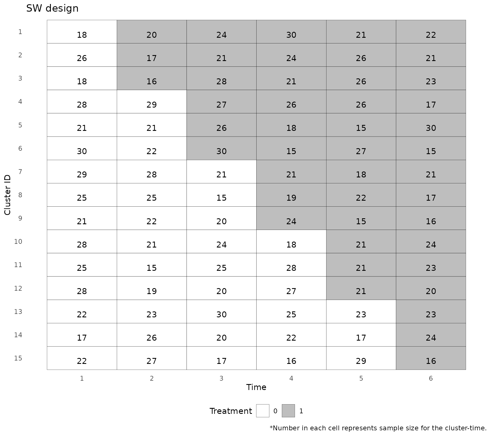

The load_data function takes in raw data and creates a
data object that can be accepted by the plot_design and
analyze functions. We use the made-up dataframe
sw_data_example to demonstrate the workflow.
data(sw_data_example)
head(sw_data_example)
#> cluster period trt outcome_bin outcome_cont
#> 1 1 1 0 0 2.0629668
#> 2 1 1 0 0 1.2942290
#> 3 1 1 0 0 -2.2027975
#> 4 1 1 0 0 0.7933190
#> 5 1 1 0 0 -0.8249006
#> 6 1 1 0 0 -0.8456510
dat <- load_data(
time = "period",
cluster_id = "cluster",
individual_id = NULL,
treatment = "trt",
outcome = "outcome_bin",
data = sw_data_example
)
#> Stepped wedge dataset loaded. Discrete time design with 15 clusters, 5 sequences, and 6 time points. 0/2011 rows were dropped due to missing values for `cluster_id`, `time`, `treatment`, or `outcome`.The plot_design function produces a diagram of the
stepped wedge design and a summary of the variables.
plot_dat <- plot_design(dat)
plot_dat
#> $num_clusters
#> [1] 15
#>
#> $num_times
#> [1] 6
#>
#> $num_sequences
#> [1] 5
#>
#> $summary
#> cluster_id time treatment n
#> 1 : 6 Min. :1.0 Min. :0.0 Min. :15.00
#> 2 : 6 1st Qu.:2.0 1st Qu.:0.0 1st Qu.:19.25
#> 3 : 6 Median :3.5 Median :0.5 Median :22.00
#> 4 : 6 Mean :3.5 Mean :0.5 Mean :22.34
#> 5 : 6 3rd Qu.:5.0 3rd Qu.:1.0 3rd Qu.:26.00
#> 6 : 6 Max. :6.0 Max. :1.0 Max. :30.00
#> (Other):54
#>
#> $design_plot
The analyze function analyzes the stepped wedge data.
First, we analyze the data using a mixed effects model, with the Time
Average Treament Effect (TATE) as the estimand, assuming an Immediate
Treatment (IT) effect, passing the family = "binomial" and
link = "logit" arguments to glmer.
analysis_1 <- analyze(
dat = dat,
method = "mixed",
estimand = "TATE",
time_varying_assumption = "IT",
family = "binomial",
link = "logit")
#> boundary (singular) fit: see help('isSingular')
print(analysis_1)
#> $model
#> Generalized linear mixed model fit by maximum likelihood (Laplace
#> Approximation) [glmerMod]
#> Family: binomial ( logit )
#> Formula: outcome ~ factor(time) + treatment + (1 | cluster_id)
#> Data: dat
#> AIC BIC logLik deviance df.resid
#> 2054.801 2099.652 -1019.401 2038.801 2003
#> Random effects:
#> Groups Name Std.Dev.
#> cluster_id (Intercept) 0
#> Number of obs: 2011, groups: cluster_id, 15
#> Fixed Effects:
#> (Intercept) factor(time)2 factor(time)3 factor(time)4 factor(time)5
#> -1.31117 0.07874 0.15508 0.09773 -0.13764
#> factor(time)6 treatment
#> 0.11375 -0.19690
#> optimizer (Nelder_Mead) convergence code: 0 (OK) ; 0 optimizer warnings; 1 lme4 warnings
#>
#> $model_type
#> [1] "it_mixed"
#>
#> $estimand
#> [1] "TATE/LTE"
#>
#> $te_est
#> [1] -0.1969021
#>
#> $te_se
#> [1] 0.1515775
#>
#> $te_ci
#> [1] -0.4939939 0.1001898Repeat the analysis, but using GEE rather than a mixed model.
analysis_2 <- analyze(
dat = dat,
method = "GEE",
estimand = "TATE",
time_varying_assumption = "IT",
family = "binomial",
link = "logit")
print(analysis_2)
#> $model
#>
#> Call:
#> geepack::geeglm(formula = outcome ~ factor(time) + treatment,
#> family = family_obj, data = dat, id = cluster_id, corstr = corstr)
#>
#> Coefficients:
#> (Intercept) factor(time)2 factor(time)3 factor(time)4 factor(time)5
#> -1.30124846 0.05519872 0.14804502 0.07418674 -0.15673203
#> factor(time)6 treatment
#> 0.12102708 -0.20139810
#>
#> Degrees of Freedom: 2011 Total (i.e. Null); 2004 Residual
#>
#> Scale Link: identity
#> Estimated Scale Parameters: [1] 1.002224
#>
#> Correlation: Structure = exchangeable Link = identity
#> Estimated Correlation Parameters:
#> alpha
#> -0.004809356
#>
#> Number of clusters: 15 Maximum cluster size: 153
#>
#>
#> $model_type
#> [1] "it_GEE"
#>
#> $estimand
#> [1] "TATE/LTE"
#>
#> $te_est
#> [1] -0.2013981
#>
#> $te_se
#> [1] 0.08027659
#>
#> $te_ci
#> [1] -0.35874021 -0.04405599Mixed model, with Time Average Treament Effect (TATE) as the estimand, without assuming an Immediate Treatment (IT) effect.
analysis_3 <- analyze(
dat = dat,
method = "mixed",
estimand = "TATE",
time_varying_assumption = "ETI",
family = "binomial",
link = "logit")
#> boundary (singular) fit: see help('isSingular')
print(analysis_3)
#> $model
#> Generalized linear mixed model fit by maximum likelihood (Laplace
#> Approximation) [glmerMod]
#> Family: binomial ( logit )
#> Formula: outcome ~ factor(time) + factor(exposure_time) + (1 | cluster_id)
#> Data: dat
#> AIC BIC logLik deviance df.resid
#> 2057.742 2125.019 -1016.871 2033.742 1999
#> Random effects:
#> Groups Name Std.Dev.
#> cluster_id (Intercept) 1.025e-07
#> Number of obs: 2011, groups: cluster_id, 15
#> Fixed Effects:
#> (Intercept) factor(time)2 factor(time)3
#> -1.31117 0.08613 0.19082
#> factor(time)4 factor(time)5 factor(time)6
#> 0.04589 -0.17506 0.14254
#> factor(exposure_time)1 factor(exposure_time)2 factor(exposure_time)3
#> -0.24845 -0.32298 0.15013
#> factor(exposure_time)4 factor(exposure_time)5
#> -0.25090 -0.44081
#> optimizer (Nelder_Mead) convergence code: 0 (OK) ; 0 optimizer warnings; 1 lme4 warnings
#>
#> $model_type
#> [1] "eti_mixed"
#>
#> $estimand
#> [1] "TATE"
#>
#> $te_est
#> [1] -0.2225999
#>
#> $te_se
#> [1] 0.1801769
#>
#> $te_ci
#> [1] -0.5757467 0.1305469